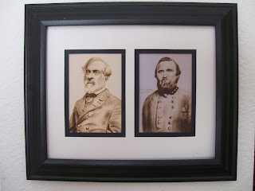

Joe Radle 1935-2011
7/31/2011
"Capt." Joe Radle was a frequent contributor to, and good friend of this blog. I just received word today of Joe's death, June 3, 2011. Joe was well known for his photo cartoons that featured his ventriloquist friends making humorous comments about life, usually political in nature (which is why you didn't see more of them here). But they always communicated in a creative manner Joe's enthusiasm for life and his concern for his fellow man. He'll be missed.
Joe was an artist is multiple media. In Joe's honor and memory I have a special prize to award today. It is a framed display featuring photos of two of Joe's pencil drawings from 2006. The subjects are General Robert E Lee (left) and General T.J. "Stonewall" Jackson (right). This is a special interest item, so rather than award it through a general random drawing, a special drawing was held among those specifically interested in owning it.
And the winner is Ron Schultz, Topeka, Kansas. Ron gives presentations on the war for area Middle Schools and High Schools and has participated in reenactments at Wilson's Creek Battlefield in Springfield, Missouri.
{kind=link}

Joe was an artist is multiple media. In Joe's honor and memory I have a special prize to award today. It is a framed display featuring photos of two of Joe's pencil drawings from 2006. The subjects are General Robert E Lee (left) and General T.J. "Stonewall" Jackson (right). This is a special interest item, so rather than award it through a general random drawing, a special drawing was held among those specifically interested in owning it.
And the winner is Ron Schultz, Topeka, Kansas. Ron gives presentations on the war for area Middle Schools and High Schools and has participated in reenactments at Wilson's Creek Battlefield in Springfield, Missouri.